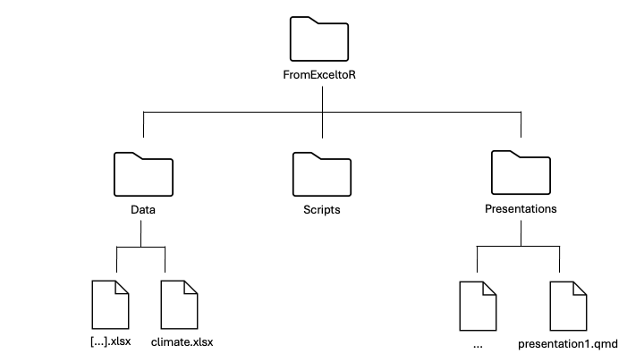

6*12
x <- 100
x + 7Exercise 0: File Tree and Setup
File Tree
Before diving into the hands-on exercises, it’s important to get your files organized so everything runs smoothly. In coding, we refer to folders as directories, and we often describe their structure using a file tree — a visual or written outline that shows how files and folders are arranged. Setting up a clear file tree will save you time and frustration later. This short setup will make sure all your data, presentations, and scripts are easy to find and ready to use. Follow the steps below carefully — they’ll help you stay organized throughout the course.
Make a new directory for this course called FromExceltoR .
Go to course website and to the Data tab. Press the DOWNLOAD DATA button.
Move the Data folder to your FromExceltoR directory and unzip it.
Download the presentations via the DOWNLOAD PRESENTATIONS button and move it to your FromExceltoR directory and unzip it, just like you did with the Data folder.
Under your FromExceltoR directory, make a new directory for your scripts called Scripts.
Make sure your file tree looks like this:

RStudio
Start RStudio.
Make a new R document. Go to the menu bar and click File → New file… → R Script…. Give the R document a title that makes sense to you. NB! The document is not saved yet.
Set working directory. Let’s figure out where RStudio’s working directory is and then set it to your project folder, “FromExceltoR”. Go to the menu bar and click Session → Set Working Directory… → Choose Directory…. Find your project folder in the navigation pane, select it, and click Open.
You should see a
setwd("...")command appear in the Console below. Copy that working-directory path into your new R script file.Go to the R console (lower left window) and write a few commands, one at a time. You could for example try these commands:
Notice how a new object, x, appears in the Global Environment window (upper right window) and can be used for new computations.
Commands written at the prompt are not saved for later use! It is fine to write commands that should never be used again at the prompt, and it is fine “to play at the prompt”, but in general you must organize your commands in R scripts (or Quarto files, which will be introduced in Presentation I).
Save your document in your Scripts directory. Go to the menu bar and click File → Save as….
To save your code, you need to store it in a file. There are several file formats available for this purpose, and in this course, we are using R Scripts and Quarto files (the latest format in the code reproducibility domain).
R Packages
R comes with a lot of functionalities, but the enormous community of R users also contributes to R all the time by developing code and sharing it in R packages. An R package is simply a collection of R functions and/or datasets (including documentation). As of September 20, 2024, there are 21,361 packages available at the CRAN repository (and there are many other repositories).
An R package needs to be installed and loaded before you can use its functionalities. You only have to install a package once (until you re-install R), whereas you have to load it in every R session if you want to use it. As an example, let’s install the package
cowplot.Install. Choose one of the two installation methods:
a) Using the command line:
install.packages("cowplot")Note that for this approach you need to know the name of the package and spell it correctly, including capitalization!
b) Using the graphical interface:
Look at lower right of your Rstudio window where you have a window with several tabs. Click on Packages. You will see a list of your currently installed packages and their versions. To install
cowplot, click on Install and start to type the name. You will notice a drop down list appears from which you can select the correct package. This is useful if you are not quite sure of the correct spelling.A lot of red text will be written in the console while the installation goes on. This usually does not mean there was a problem, unless the text reads ‘error’ or ‘exit’. In the end, the package is installed, or you will see an explanation of what went wrong.
Loading. Load the package you just installed with the command
library(cowplot). If everything went well, you should now be able to run the commandpackageVersion('cowplot')andhelp(package = 'cowplot').Getting help in R
Every R function comes with a help page, that gives a brief description of the function and describes its usage (input/arguments and output/value). Let’s use the function
median()as example. It is, no surprise, computing the median from a vector of numbers.Try these commands:
x <- c(1, 3, 8, 9, 100, NA) x median(x)The first command defines a vector with six elements, but where the last number is missing (NA = Not Available). Since the last number is missing,
medianreturnsNA. However, could we makemedianfind the median of the remaining numbers. Perhaps the help page can help out!Look at the help for the
medianfunction:?medianThe help page for
medianappears in the lower right window. If we read it carefully, then we realize that the extra argument (input)na.rmmay help us. We therefore try this:median(x, na.rm=TRUE)Report the median value here.
Admittedly, R help pages are often quite difficult to read, but be aware that there are examples of commands in the bottom of each help page. For more complicated functions, these examples can be very useful while trying to get to know the function and its functionalities.
In order to use the help pages as above, you need to know the name of the function, which obviously may not be the case: You want to compute the median but have no idea what function to use. The best way to proceed: Google! Use “R whatever-you-want-to-search-for”, and you often get exactly what you need.
While working with R, you will get a lot of error messages. Some are easy to understand, and you will readily be able to fix the problems, while others… Again, the best answer is: Google and ChatGPT! Copy the error message into Google or ChatGPT, and you will often find help.